※这篇文章是用 AI（Claude Sonnet 4.6）写的，我稍微补充了一部分😁
2025年3月去吃的😁😊 这次去了位在浦添市城间的「娜比家 浦添购物中心店」😄
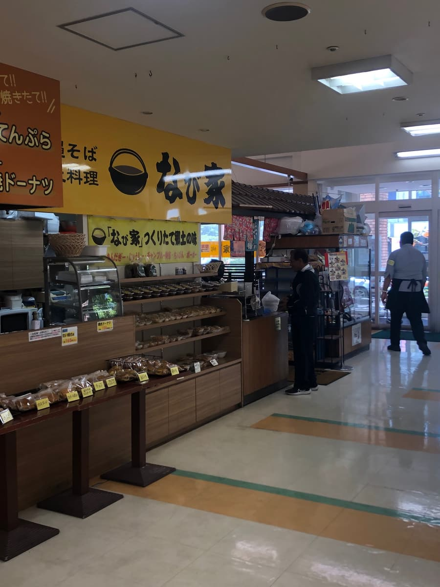
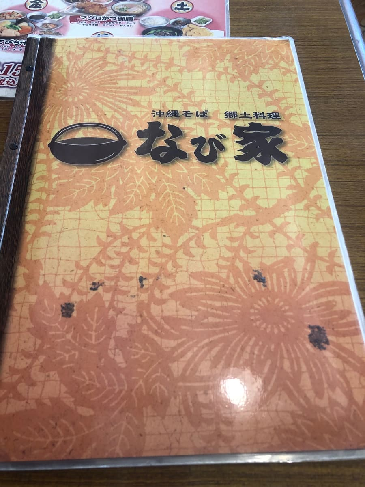
说到「娜比家」，是以冲绳面与乡土料理为招牌的连锁店，除了浦添购物中心店，还有 Barclays Court 店、永旺南风原店等多家分店呢。
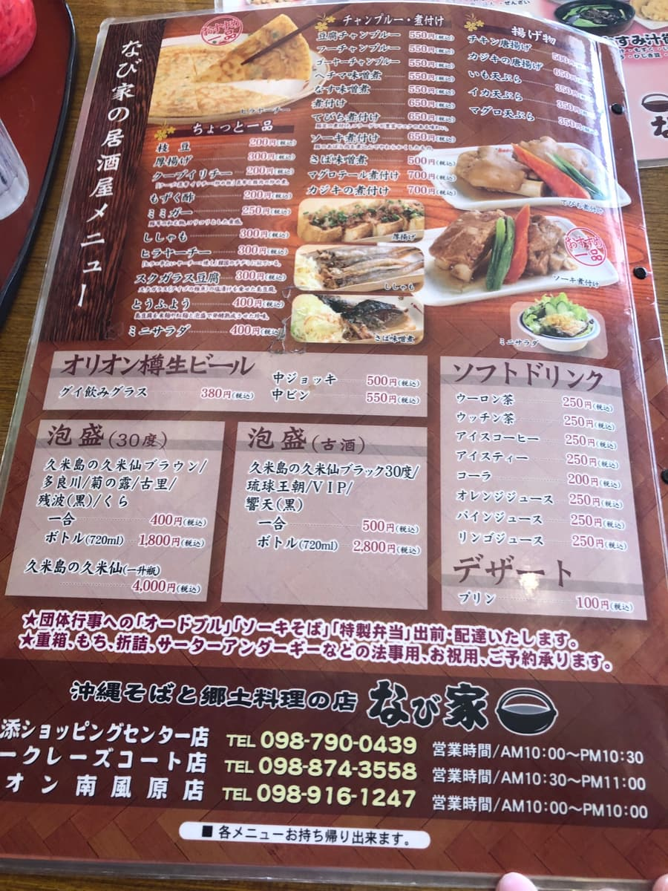
不愧是以「现做的乡土味道」为概念，沙翁、冲绳炊饭（Jushi）、Chinbin、Pōpō 等冲绳家常味也有外带贩售，在入口周围整排陈列着🌺 明明是在购物中心里，却充满了冲绳风情，从靠近店面的时候心情就高昂起来了。
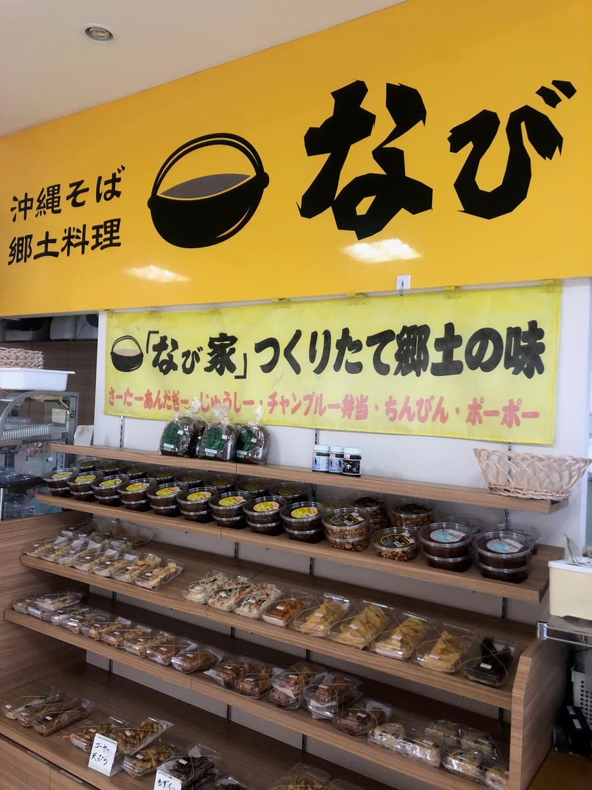
一进店，因为是平日中午，挤满了当地客人。可以慢慢感受到这是一家扎根在地的店。菜单不只有冲绳面，还有苦瓜什锦炒定食、面麸什锦炒定食、炖煮猪脚、鲔鱼、旗鱼定食等，冲绳家常料理种类丰富，感觉不管点哪个应该都不会错😁
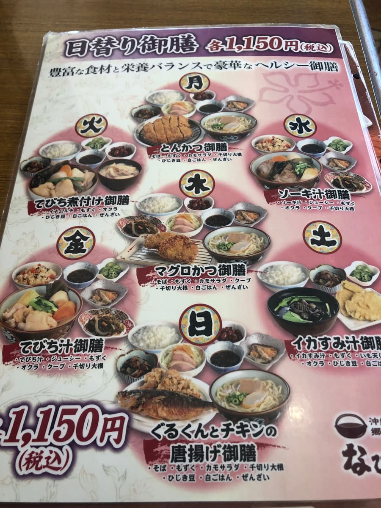
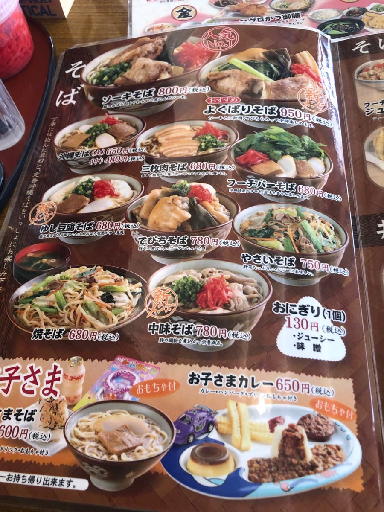
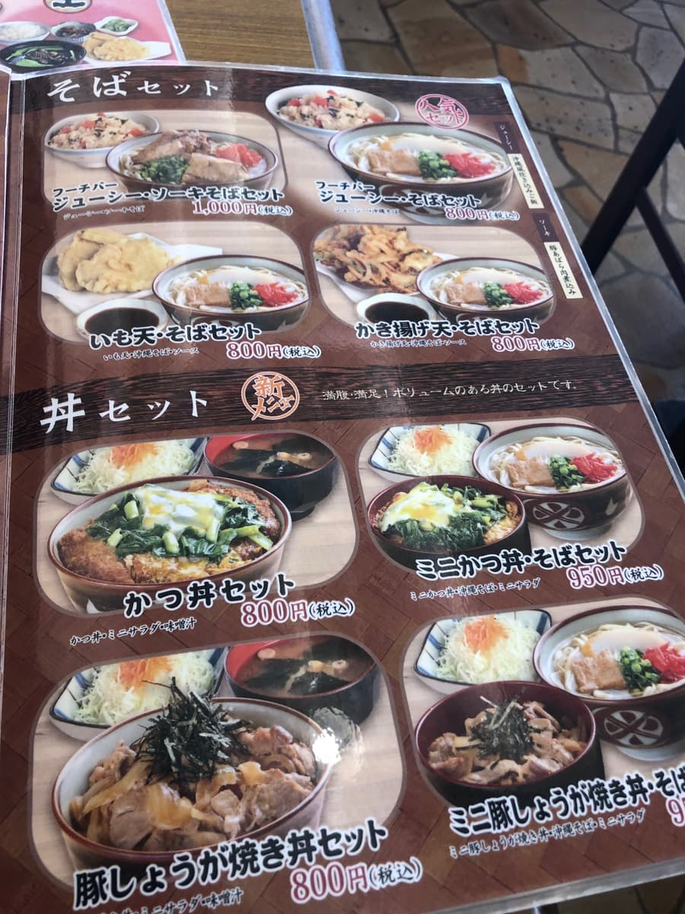
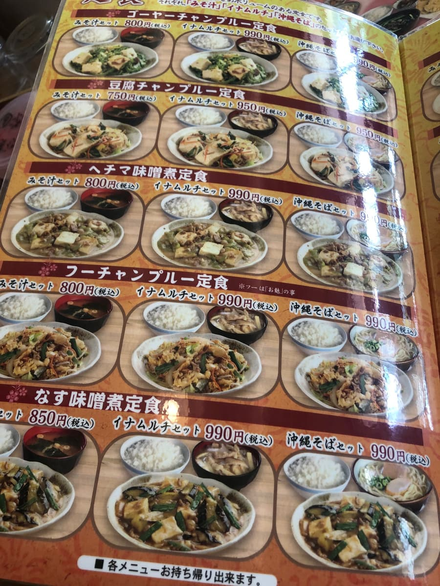
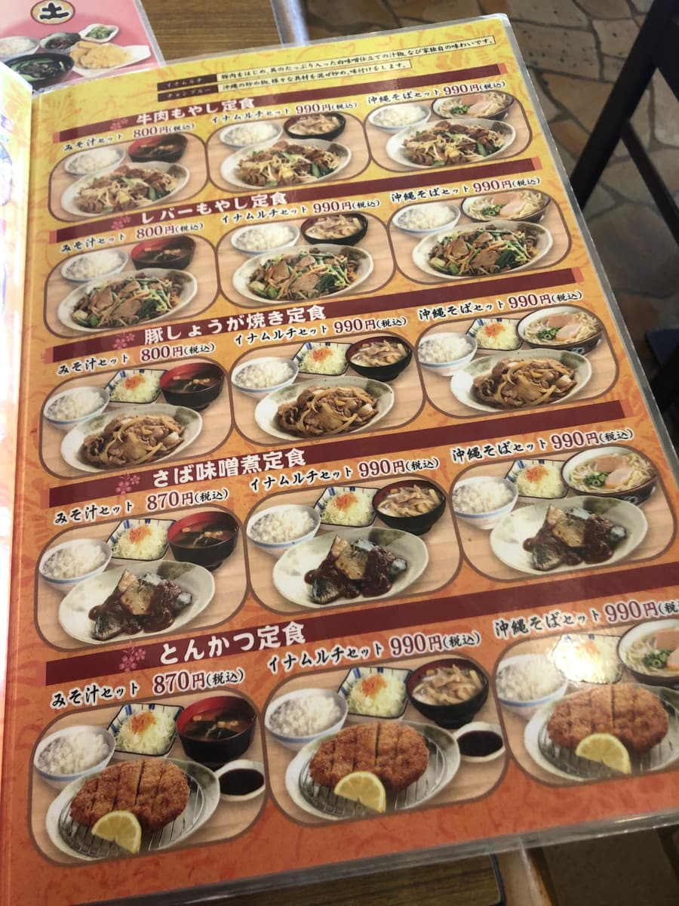
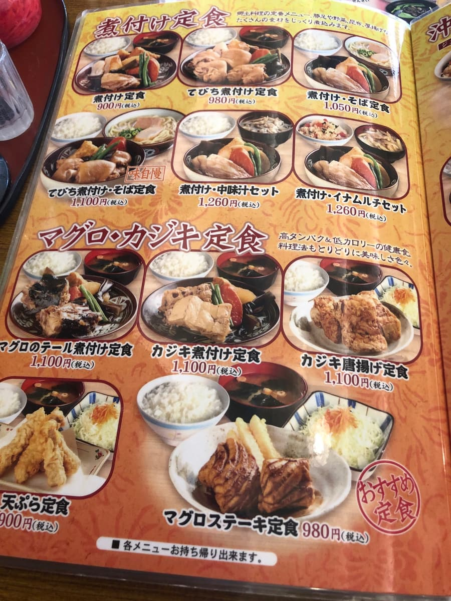
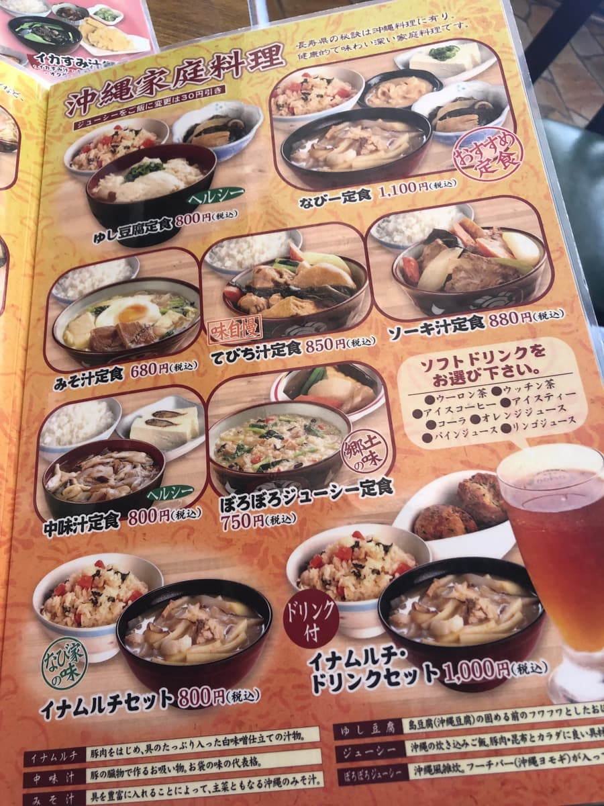
这次点的是菜单上写着「推荐」的「贪心面（950日圆）」。能一次享用带骨排骨、猪脚、三层肉三种，真是名副其实的贪心配置的一碗呢🍜
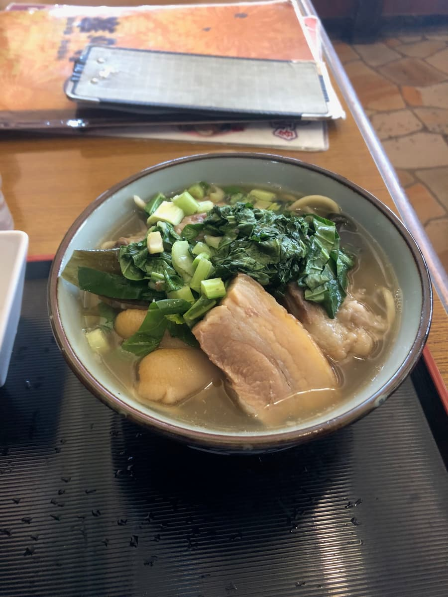
看着马上送来的大碗，青菜和葱堆得满满的，外观很热闹。先照惯例喝一口汤。应该是猪骨和柴鱼等的合并高汤，但哪种高汤都不太强调自己的味道。没有突出的地方，感觉是「普通的味道」。
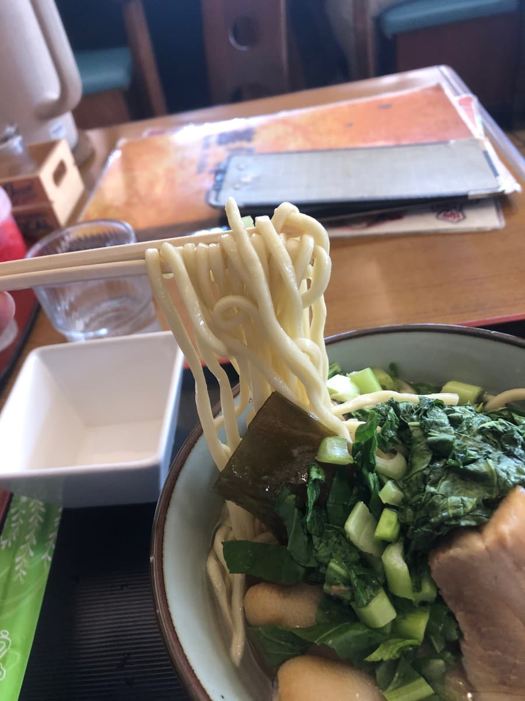
面是中粗的松卷面，口感相当偏软。个人觉得如果再有点嚼劲会更开心。
配料方面，带骨排骨、猪脚、三层肉三种都放，是「贪心面」的醍醐味✨ 不过老实说，三种都稍微残留一点筋感，在软嫩度与入味的鲜味方面，觉得稍微不够😅 昆布结和青菜也放得满满的，配料的份量感本身是足够的。
整家店给我的感受是，这里是作为「当地日常餐食场所」成立的。是扮演让附近的人可以午餐时轻松顺道前来角色的店。看乡土料理菜单的丰富以及外带甜点的充实，就很能传达这份用心🌺
评分（9分/15分）：「娜比家」不愧是连锁经营，有稳定感，不过说到有没有突出的个性，也不尽然，我觉得是属于普通的一碗。话虽如此，是个好入口又方便常来的店，难怪会挤满当地客人😊 来到浦添一带时，如果突然想吃冲绳面，要不要顺道来坐坐呢。
面：★★★☆☆（3）
汤头：★★★☆☆（3）
配料：★★★☆☆（3）